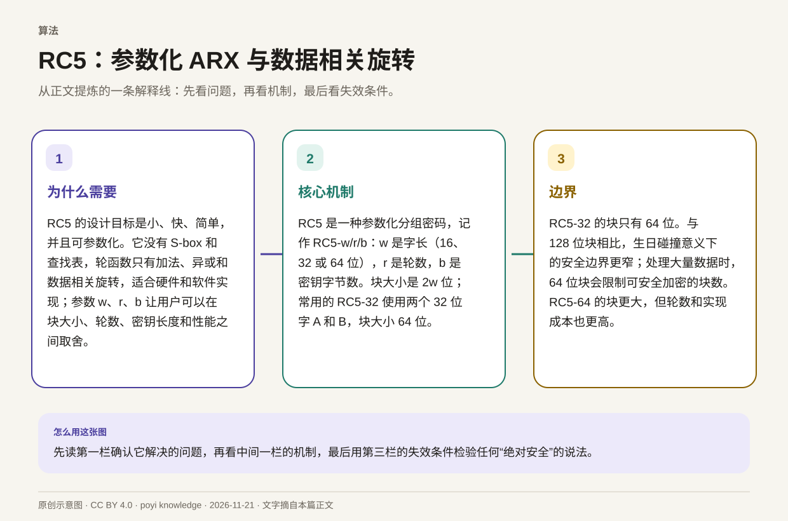
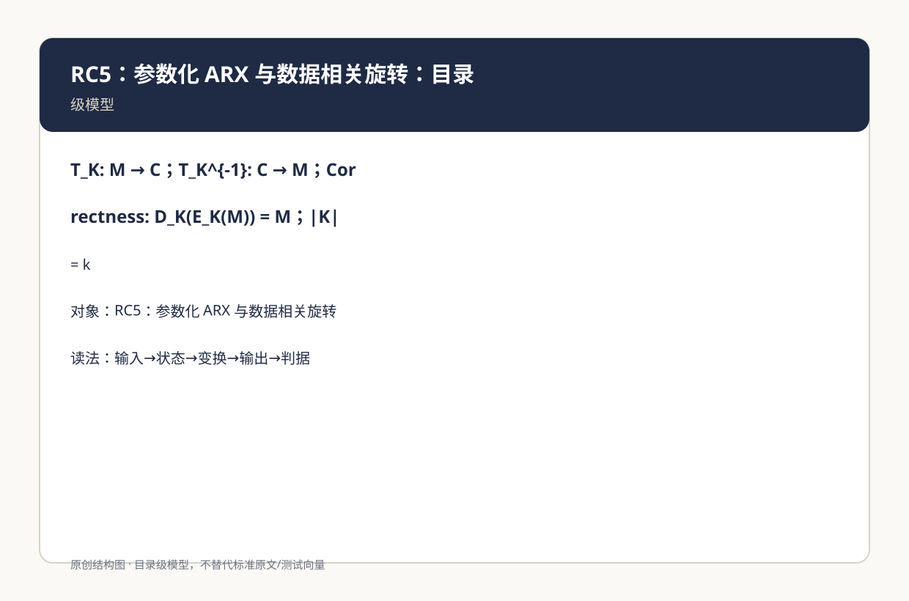

原理与机制
算法：RC5 分组密码（RC5）。RC5 是一种参数化分组密码，记作 RC5-w/r/b：w 是字长（16、32 或 64 位），r 是轮数，b 是密钥字节数。块大小是 2w 位；常用的 RC5-32 使用两个 32 位字 A 和 B，块大小 64 位。Rivest 把 RC5-32/12/16（32 位字、12 轮、16 字节密钥）作为标称参数集。RC5 的密钥扩展把 b 字节密钥转成 c 个字 L，并生成 T = 2(r+1) 个轮密钥字 S。S 先用两个常数初始化：
P = 0xb7e15163
Q = 0x9e3779b9
S[0] = P
S[i] = S[i-1] + Q (mod 2^w)
然后把 L 混入 S：重复 3 * max(c, T) 次，执行 A 和 B 的旋转与相加，把结果写回 S 和 L。RC5 的轮密钥没有 S-box，只有加法、异或和循环旋转。加密先把 S[0]、S[1] 加到 A、B，再执行 r 轮：
A = ((A xor B) <<< B) + S[2i]
B = ((B xor A) <<< A) + S[2i+1]
其中 <<< 是 W 位循环左移，旋转量只取决于 B 或 A 的低 log2(W) 位。解密反向执行：先减轮密钥，再反向旋转并异或，最后减 S[0]、S[1]。这种旋转量由数据决定的设计是 RC5 的一个显著特征。

为什么重要
RC5 的设计目标是小、快、简单，并且可参数化。它没有 S-box 和查找表，轮函数只有加法、异或和数据相关旋转，适合硬件和软件实现；参数 w、r、b 让用户可以在块大小、轮数、密钥长度和性能之间取舍。数据相关旋转让轮函数带有非线性：旋转量不是固定常数，而是来自另一半数据。它使 RC5 的扩散和差分行为与固定旋转的 ARX 密码不同，也让时序和功耗分析成为实现层的重要问题。RC5 的历史地位还在于它是 RC6 的前身。RC6 在 1998 年进入 AES 竞选的最后一轮，后来 AES 选择了 Rijndael；RC5 本身没有被标准化为现代通用分组密码，但它是理解 ARX 参数化和数据相关旋转的重要样本。
应用与实例
RC5 主要出现在软件实现、教学和早期密码库中。它的参数化使它适合演示同一算法在不同 w/r/b 下的行为，而不是提供一个固定标准参数集。RFC 2040 还定义了 RC5-CBC、RC5-CBC-Pad 和 RC5-CTS 三种模式，说明 RC5 曾被考虑用于完整的消息加密。本文使用 RC5-32/20/16 的参考向量：32 位字、20 轮、16 字节密钥。它不是 Rivest 的标称 12 轮参数，而是测试向量文档给出的可复现参数集。标称 RC5-32/12/16 仍是理解参数选择的主要例子。RC5 只定义分组密码（以及 RFC 2040 的模式），不提供认证。实际需要认证时，必须使用 AEAD 或加密后再 MAC；不能把 RC5 的数据相关旋转当成完整性保护。

边界与攻击面
RC5-32 的块只有 64 位。与 128 位块相比，生日碰撞意义下的安全边界更窄；处理大量数据时，64 位块会限制可安全加密的块数。RC5-64 的块更大，但轮数和实现成本也更高。### 数据相关旋转与侧信道
RC5 的旋转量来自数据，软件实现可能因旋转量不同而产生时序差异；硬件实现也可能在功耗或电磁辐射上泄露旋转量。常量时间实现、掩码和故障防护属于实现层，不在算法定义内。### 参数选择
RC5 的安全性依赖 w、r、b 的选择。Rivest 明确警告，过小的轮数或不合适的参数会提供很弱的安全性；标称 RC5-32/12/16 只是建议起点，不是对所有威胁模型都足够。参数必须在设计时固定，不能由接收方在运行时任意选择。### 无完整性
RC5 只提供分组密码的伪随机置换，不提供完整性。翻转密文会改变对应明文，但 RC5 本身无法检测；需要认证时应使用 AEAD 或加密后再 MAC。本文的教学实现只处理 RC5-32、固定轮数和固定密钥/数据。它不生成密钥、不做常量时间处理、不实现 CBC/CTS 模式、协议、密钥管理或侧信道防护，不能用于生产环境。
历史与背景
RC5 由 Ronald Rivest 在 1994 年的 Fast Software Encryption 会议上提出。论文强调快速、适合软硬件实现、使用数据相关旋转，并允许可变字长、轮数和密钥长度；它把 RC5-32/12/16 作为标称参数集。1996 年，Baldwin 和 Rivest 在 RFC 2040 中描述 RC5 的密钥扩展、块加密以及 CBC、CBC-Pad、CTS 模式。RC6 是 RC5 的后继设计，属于另一个实体；它不是本文的覆盖范围。它没有成为现代通用标准，但它的 ARX 结构、参数权衡和侧信道问题仍是理解后续轻量级密码的重要背景。
逐步示例与核验
复算示例
取标准或公开测试向量中的一组参数，按“输入—执行—输出”记录：先写出该条目的形式式 (C=E_K(P;r),\qquad P=D_K(C))；再按规范顺序执行每一步，最后把输出与独立实现或标准向量逐字节对照。若没有可引用的数值向量，就只记录结构步骤，不伪造输出。
参考出处
- Wikipedia search entry for RC5 分组密码. https://zh.wikipedia.org/w/index.php?search=RC5%20%E5%88%86%E7%BB%84%E5%AF%86%E7%A0%81
- Handbook of Applied Cryptography (Menezes, van Oorschot, Vanstone). https://www.cacr.math.uwaterloo.ca/hac/